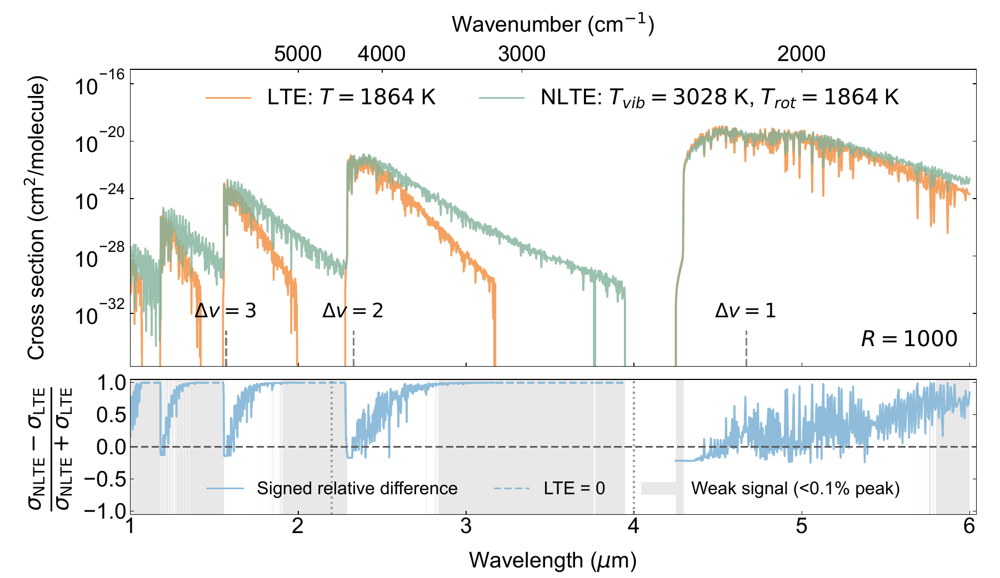
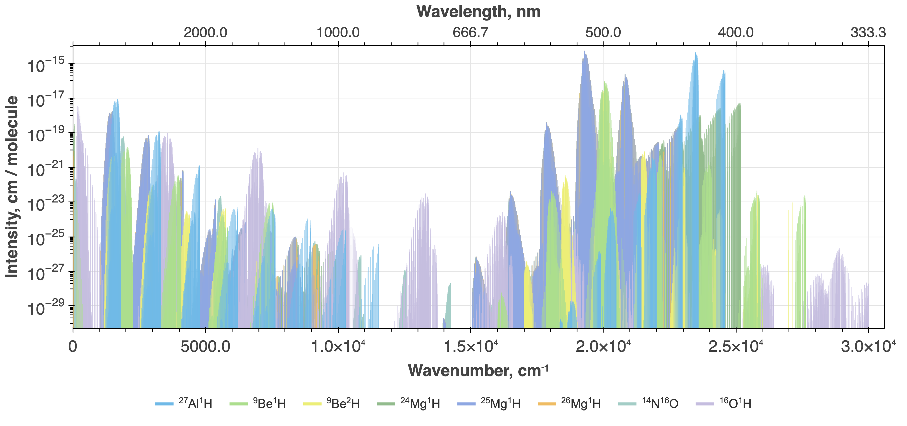

01 / OPEN SOURCE
PyExoCross

01 / 03
Tools that turn large line lists into physically useful spectra
My research joins high-resolution molecular data, scalable spectral modelling, and the interpretation of complex astronomical and laboratory spectra.

Tools that turn large line lists into physically useful spectra

Empirically refined molecular spectra for high-resolution research